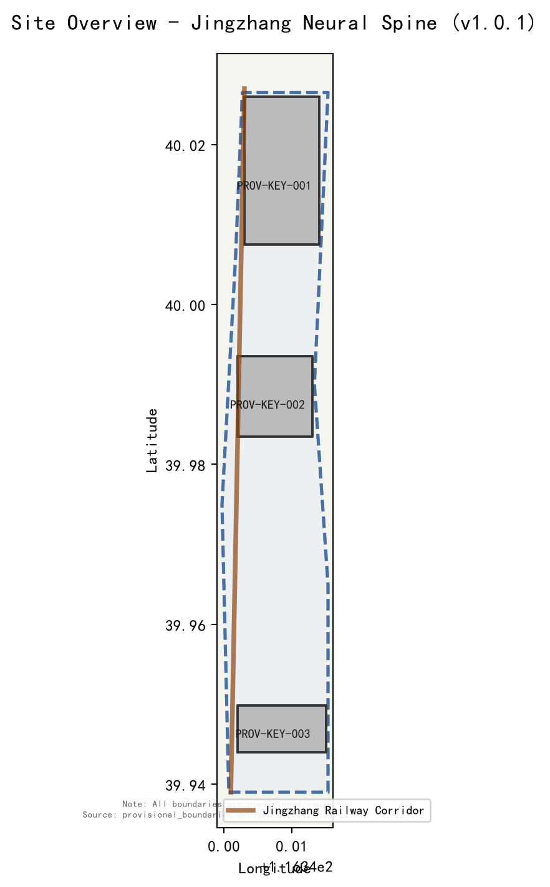
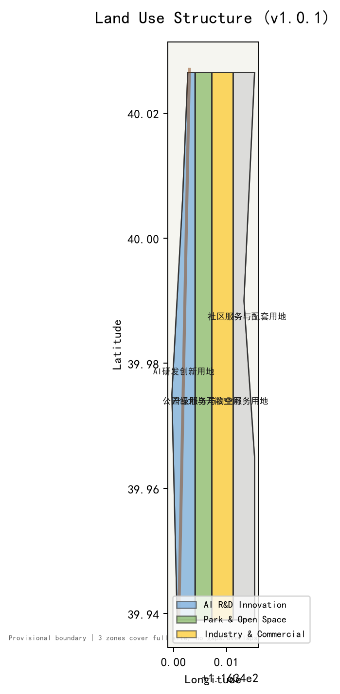
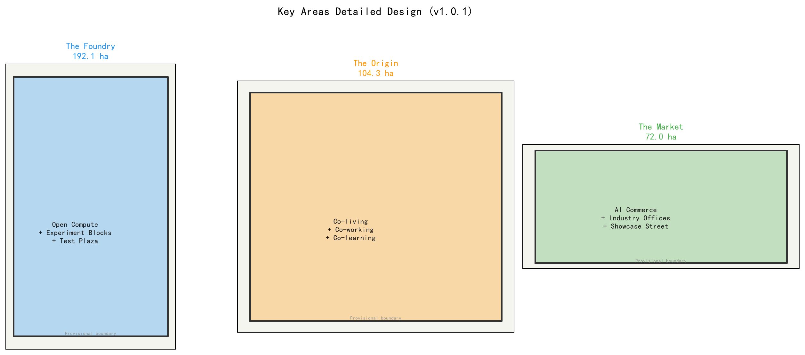
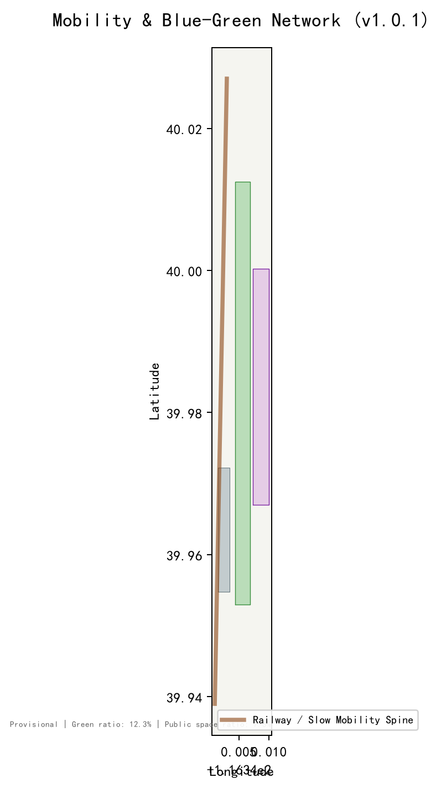
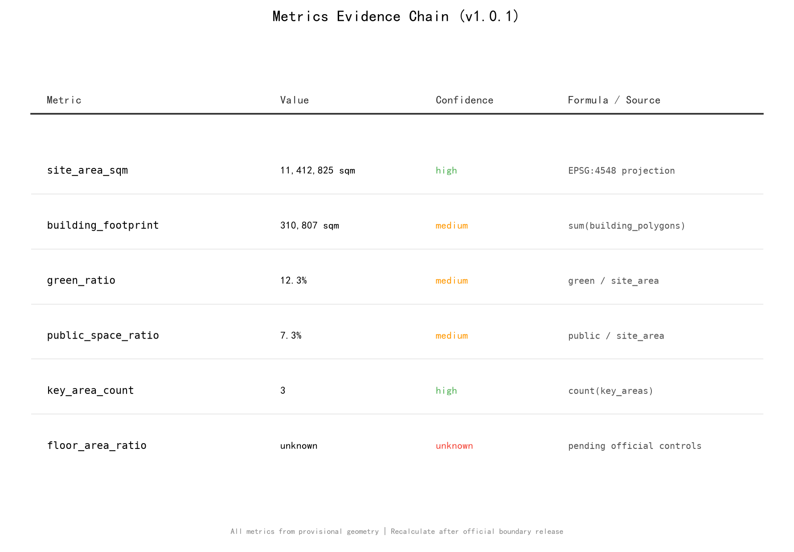

统筹研究范围 43.6 km²、总体设计范围 11.4 km²、重点区域范围 368.4 ha。边界均为 provisional_rough，正式数据发布后重新复算。


| Zone | Code | Intent |
|---|---|---|
| AI研发创新用地 | 0802 | 实验组团与开放算力中心 |
| 公园绿地与开敞空间 | 1401 | 铁路遗址公园脊干 |
| 产业服务与商业服务用地 | 05 | 集市与廊道服务设施 |
京张铁路遗址公园为南北连续慢行脊干，衔接地铁13号线、昌平线与规划线路；东西向依托学院路、北土城路。AI自适应信号与智能公交接驳为概念建议。
铁路公园为纵向蓝绿脊干，小月河为横向蓝绿廊道，串联三区中央绿地与社区公园。AI朝圣地标：詹天佑节点、开源贡献荣誉墙、AI里程碑长廊。

建筑基底约 310,807 平方米（provisional）。保留高校科研建筑与铁路遗迹；改造低效产业用地；新建实验组团、混合开发与AI商业综合体。容积率因缺少官方控规记为 unknown。
| Phase | Projects |
|---|---|
| 一期 0-2年 | 铸件坊实验组团、开放算力中心、铁路公园脊干贯通 |
| 二期 2-4年 | 原点社区混合开发、首批AI场景、开源贡献荣誉墙 |
| 三期 4-6年 | 集市AI商业综合体、产业办公集聚、运营闭环 |
| ID | Scenario | Location |
|---|---|---|
| SC-01 | AI+社区诊所 | 原点社区 |
| SC-02 | AI+导师中心 | 原点社区 |
| SC-03 | AI+自适应零售 | 原点社区 |
| SC-04 | AI+出行舱 | 全廊道 |
| SC-05 | AI+长者照护站 | 原点社区 |
| SC-06 | AI+城市农业 | 铁路公园 |
| SC-07 | AI+创客实验室 | 铸件坊 |
| SC-08 | AI+应急响应 | 全廊道 |
| SC-09 | AI+文化导览 | 铁路公园 |
| SC-10 | AI+能源微电网 | 集市/铸件坊 |
产业测试验证场景：lab-to-street testbed、AI+交通自适应走廊、AI+公共安全运营复核。
| Source ID | Type | Usage |
|---|---|---|
| OFFICIAL-ANNOUNCEMENT | official_public | Primary control basis |
| AGENT-TASKBOOK | user_provided_cleared | Agent task framework |
| BOUNDARY-SOURCE | provisional | Site boundary (provisional_rough) |
| SOURCE-REGISTRY | registry | Source usability classification |
| SITE-PACKAGE | official_public | Brief, enums, schemas |
Assumption A-CONTROLS-001: 控规指标、道路红线、权属、市政和工程约束需以官方附件确认。 pending
| Gate | Status |
|---|---|
| Deterministic Validation | PASS |
| Spatial Review | PASS |
| Visual Static | PASS |
| Professional Review | PASS |
| Bilingual Contract | v1 |
